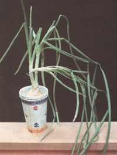

A Winter Garden
December/January 1994
Issue # 147 - December/January 1995
GARDEN & YARD
Rick the Winter Blues with Living Greenery
Grow avocado seeds, pineapple tops, roots, and seeds for fun. By Sarah Welcome Conners
We have a sure cure for these late-winter blues. On the windowsills all around the house we grow a minigardens. Not houseplants mind you, but edibles and wild plants we grow for fun and for their promise of summer sun to come.
Our daughter Jamie got us started. Home from first grade on a no-school snow day, she was helping me peel the last of our homegrown potatoes just up from the cold cellar in the basement. They were good-keeping Kennebecs, grown from double-certified, organic State of Maine stock purchased from Johnny's Selected Seeds. My husband Jim planted them late and left them in the ground to winter-cure until frost threatened. Still, they were covered with 3 to 6-inch-long water sprouts.
Jamie asked what the bleached, sunseeking shoots were. When I explained that the potatoes were trying to grow baby potatoes, her little face fell. "Can we plant them?" she asked. I looked out the window at the blizzard howling through the bean pole tipis and old tomato stakes in the garden and, suddenly, there wasn't really a foot of ice out there. It was spring and I could feel the sun-warmed loam in my hands and I remembered how my Granddad always insisted that watersprouts made the hardiest potatoes of all. "Let's try it," I said.
We rifled the cellar for potting soil and I punched holes in the bottom of a coffee can. Some sprouts had little nubbins of roots around the base and I cut out the half-dozen sturdiest just as you'd eye a potato. We planted them with just the tips showing and set them in a cool but bright north window that mimicked spring growing conditions. We watched, watered sparingly, and cheered them on. Within a month Jamie had thriving, deep-green, crinkly leafed little potato plants to take to show-and-tell.
Since then, we've been devoted winter windowsill gardeners, trying to grow every seed, plant, root, or berry we run across in the yard, woods, or grocery store. There aren't any books on it, so my husband Jim and I use our gardening experience where we can. With exotics or wildlings, we consult gardening books and the encyclopedia, trying to replicate a plant's natural ecology. It's all for fun and learning, and each failure teaches us something.
Root Vegetables
From your own cold cellar or the store, pick roots with a good button of greenish leaf stem on top. If all of the growing stem end is cut off-leaving only a white circle of interior flesh showingthere is no terminal growth left to produce stem and leaves. Left in the refrigerator for weeks-or in a warm closet for a few days-they should sprout.
You can bury them whole in potting soil with the top of the root or stem at soil level. Keep the soil moist. Or, cut off the top inch of root and set it upright in a plate of water. Or, put a long carrot root in a tall jar with water and colorful stones, filling the space between the root and the glass sides.
Transplanted to soil in the spring, most will produce seed. But the seed won't always be worth planting.
Much produce comes from hy brids which do not come true from seed.
It is often a puzzle how to break a root's dormancy. Some just need a warm, sunny window. Others need experimenting with. We are just now growing a taro root from the grocery. I put the base in water and in time it grew little rootlets on the side and made a purple bud on top. It grew only when I began dribbling on warm water, making "rain."
It's often a puzzle to break a root's dormancy. They need experimenting with.
If you are using just-pulled root vegetables sold with the leaves attached, pull off all leaves save the little rosette of new growth in the middle. Or, pull off (don't cut) the limp foliage and store in the fridge till tiny yellow new growth sprouts from the stem end.
Sweet Potatoes
Choose a skinny tuber and place one end in a clear glass filled with water. Place in a sunny window. Change the water and clean or replace the glass daily. Roots will grow from the bottom and greenery from the top. We train the dainty, brilliant green leaves and purple stems of the vines (a relative of morning glories) to grow all around the kitchen windows. A little fertilizer in the water will help. The vines will produce tubers if transplanted outdoors when the soil is good and warm.
Allium (Onion) Family
Chives grow like a fist-size cluster of miniature scallions stuck together with rice paper. Cutting-size plants are sold in pint containers in the grocery stores or you can get starter clumps from mail order seed companies. Several containers of chives spend the winter in rich potting soil on south-facing windowsills around the house. I snip ends for salads all winter, then each spring we dump out the most robust chive plants, divide them into halfdollar-size clumps and transplant them to the garden. In the fall, we dig out the most vigorous clumps with the soil around them and pot them up for the winter garden. Chives can stand considerable neglect but do best with frequent watering and a good dose of liquid fertilizer once a month.
Pineapple
For winter gardening, pick a fruit for the health of its leafy crown. Outer leaves can be dry, frayed, and ratty looking, but pick one where the leaves in the center of the rosette on top are a bright green color. Pull gently on a leaf just outside the central spike. It should hold fast unless you pull hard. Do pull hard: the leaf should be alive and green-to-yellow-to-white down to its base. If it has a dead or sick-looking base, find another.
From time to time, I pull the dried leaves around the base down-but not so far that they come off. At the base of the lower ring of leaves are little flat worms of roots growing up. In a few days, the roots will begin to put out tiny white threads and the plant is ready to be potted. I put the bottom inch of leaves and core into pot ting soil and firm around enough to keep the plant upright. The crown will grow slowly from the inside.
Pineapple are bromeliads that store water in their fleshy leaves and are better under-watered than over. So, every few days Jamie trickles on enough room temperature water to fill the crannies between leaves in the crown. Once the garden soil is warm enough to set out main crop tomatoes, I transfer the plant outside to full sun. Given plenty of warmth, steady moisture, and a square yard of growing space, it will grow a new pineapple. With luck (or more luck than we've had so far) you can eat the pineapple, replant the crown, and as Jamie puts it: "grow another pineapple, and a `nuther and more `nuthers forever."
Avocados
We let the baby tree grow in water till it sheds the shrunken seed halves. If put into good planting medium and kept warm, well watered, bug free, and in full sun, it will grow into a small non deciduous tree with large waxy leaves that does as well inside as out. We have one in the sun-room that must be three or four years old and a yard high. Other than a good leaf washing and pyrethrin spray when brought in before frost each fall, it needs nothing but an annual repotting, water, and fertilizer.
Fresh Herbs and Other Replantings
The natural accompaniment for avocado is fresh cilantro (leaf coriander or Chinese parsley). Ground together with avocado, tomatoes, and other yummy things, the two become guacamole. With hot peppers and other spicy herbs they make fresh chili base.
Cilantro, dill, and other hothousegrown live herbs are air-freighted to stores everywhere these days. At $1.50 or so, a handful is not exorbitantly priced. At the right time of the year they come as young plants, six inches long, roots and all. Jamie noticed the roots on a clump in the fancy grocery section, so we bought and potted some. We were able to keep several plants in bounds till spring by picking off the spicy tasting outer leaves and adding them to our spicy dishes while they were still fresh. Transplanted into the garden, the plants grow lanky and produce seeds; we pull and dry the whole plants.
We've tried planting every other grocery veggie that comes in what looks like a whole plant. Scallions sold with roots still on will root and grow much like any other allium. But we've had bum luck with cut leaf spinach, parsley sprigs, and others. The lesson is, to grow, a plant has to have (or be able to generate) all three main parts: root, stem/trunk, and leaves.
Celery
Celery hearts will get pithy in the fridge if not used fast enough. Add them to the winter garden by breaking outer stalks off the hard, white disk of stem end so that only two or three short, still-crisp leafy inner stalks are left. Place in a shallow dish of water and keep in a cool, dead-dark place till you see the down-pointing hairs of roots appear around the margin of the disk. Bury the disk in a dish of rich soil and place in a bright, cool spot-but not in direct sun. The plant will grow slowly and-if placed in rich garden soil after frost and kept watered- will develop a yard-tall flower stalk that will produce fresh celery seed for this fall's homemade pickles.
Seeds
We've tried all the dry beans in a sack of "15-bean soup." Most will germinate and make conventional bean plants. Garbanzos (chick peas) and lentils are the most interesting. They make plants that look more like alfalfa than beans. Of course, all are legumes.
We've tried planting fruit seeds and nuts, but the only tree we've managed to grow from seed was from a grapefruit. It came direct from Florida and hadn't been cooled. And the seeds were plump, split, and already showing a little green when we first cut the fruit open.
The most fun is experimenting with wild seeds found during our walks in the woods and the fall-killed meadows. We dry them if needed and keep them in paper bags in an old (mouse-proof) tin-lined bread box along with seed from "heir-loom" open-pollinated varieties from the garden. Once they've had a good winter chill, we try to make them grow. All are treated the same as garden seed-planted three times the seed's diameter in a planting tray and kept moist. Some sprout; most don't. We've grown cockleburs combed out of Smurfly the dog's fur into young burdock plants and fluffy milkweed "parachutes" into little milky-sapped plants, and have sprouted quite a number of mystery seedlings. Most look like weeds.
Ginger Root
My grandmother on my mother's side was raised in Jamaica and used plenty of spices in her cooking-including fresh and candied ginger. She grew her own by planting a segment of the knobby, light-tan underground stem or rhizome in medium-size clay pots. The plants grew fernlike leaves that reached three feet high, and-set outdoors in summer-produced light-green flowers. When the plants and new rhizomes were mature but not overaged and woody (somewhere between six months and a year old), she would dig the new rhizome, clean it, snap off the stems, keep it chilled, and chop it as needed. If a "root" got too leathery, she would shred it fine, dry, and store in a jar. A thumb-size segment from the best would be saved and replanted.
We put segments of store-bought gingerroot in a warm closet till creamy little sprouts pop from the tan rhizome. Then it goes an inch deep in potting soil in 6-inch clay pots. Ginger is intolerant of cold and ours always seem to get too near a window in winter, so the leaves brown and die. But the fronds are pretty and we keep trying.
Tomato and Geranium Vines
Its easy to propagate these popular summer garden plants from cuttings. Grow them over winter in a sunny window and then root late-winter cuttings. You'll be weeks ahead of the neighbors with red flowers and fruit next year. In late summer, bend over and bury all but the growing tip of a long stem from your favorite geranium and indeterminate, nonhybrid tomato plants (I find that rank-growing cherry-types and vining geraniums grow best indoors). In two weeks, if the plant hasn't done it for you, sever the umbilical from the parent plant. Well before frost, dig up the soil around the buried stem, which will have roots growing at all nodes. Coil several inches of buried stem, root, and adhering soil in a large (12 inches wide at least) pot. Bury most of the new-grown stem as well-leaving only the lonely looking little tip end of terminal growth poking up at the center-for added root growth. Place in a warm, sunny window, keep soil moist, and you will have spindly vines with small flowers that will give you a head start when planted in the garden next spring (but harden them off-acclimating to outdoors-in slow steps).
Pests
The only real winter garden pest we have is whitefly: a tiny, snow-white-winged bug whose larvae are plant suckers that multiply in a sticky mess under the leaves of many indoor plants, especially on tomatoes.
To avoid bringing them indoors in the first place, wash leaves of new cuttings (store-bought herb plants included) in warm water and botanical soap and spray with rotenone, pyrethrin, or a mix of both-concentrating spray on the underleaves. Now available in the houseplant department of any mall mart and made from nothing but extract of tropical plants, these natural bug killers are harmless to people and all pets but fish. Cover their bowl.
In a severe infestation, a great cloud of whitefly will rise when you touch the plants. A strong vacuum cleaner will suck in the adults and three thorough applications of spray three days apart will finish off the larvae. Repeat in a week if you see so much as one surviving fly.
 |
|
 |
|
|
|
|